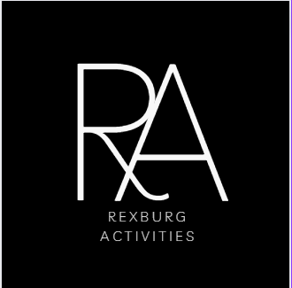
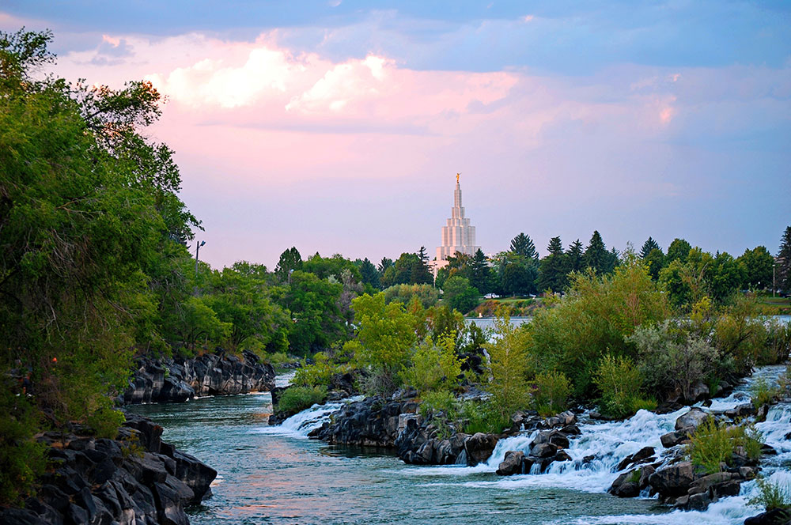
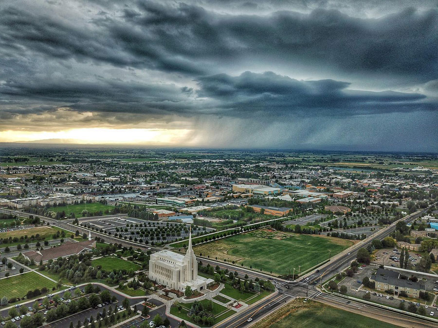
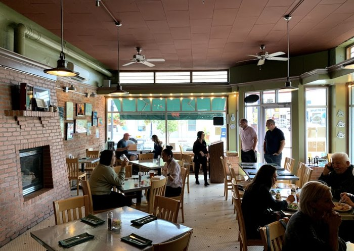
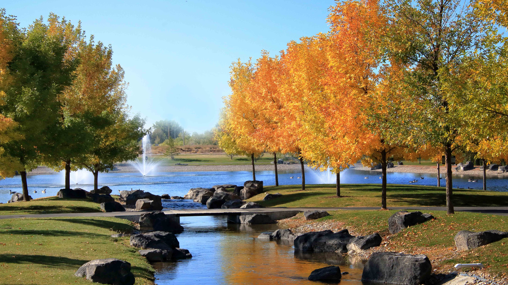
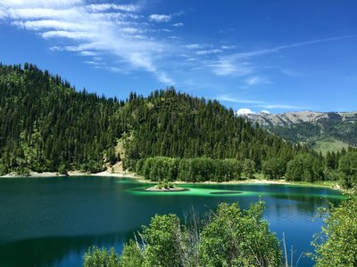

Overview
Purpose
I have lived around Rexburg almost my whole life. I moved to Swan Valley, Idaho when I was three years old then when I was eight I moved to Idaho Falls, and that’s where I lived until I started college here at BYU-I around two years ago. I know that it can seem extremely hard to find fun things to do especially when you have just moved here which I know is a big problem especially with all the new students moving to Rexburg in the fall. Since I’ve lived here my whole life, I have been able to find some fun things to do that are all within an hour drive from Rexburg. People will come to my site in order to get ideas for dates or for spending the day with their friends
Audience
My site will answer a lot of questions a lot of new students will have especially when they first move here. I am going to let them know what you can do around here that’s free. I will also give a list of what I think are the best restaurants I will categorize the restaurants from closest to farthest, and in each category I will list the restaurants from cheapest to most expensive. I will write what the average price of a meal is at each restaurant and I will write what the most popular food item is there. I will give a list of things to do when the weather is cold and it’s not good weather to be outside. I will also write about what is fun during the holidays
Branding
Website Logo
Style Guide
Color Palette
| Primary | Secondary | Accent 1 | Accent 2 |
|---|---|---|---|
Typography
Heading Font: Nanum Myeongjo, serif
Paragraph Font: Nunito, serif
Why my site?
I have struggled with inattentive presenting ADHD my whole life, so because of that I can get really stressed and shaky if there is a lot of noise but I also get bored really easily and the last thing I want to do is spend the whole day watching tv. When I would turn to google to try and find ways to spend my Saturday almost everything that the websites I looked at suggested were parties or sporting events which isn’t really what I was looking for. The activities that I am going to suggest are not going to be extremely loud so that people like me can actually find things to do
What to Expect
My site will answer a lot of questions a lot of new students will have especially when they first move here. I am going to let them know what you can do around here that’s free. I will also give a list of what I think are the best restaurants I will categorize the restaurants from closest to farthest, and in each category I will list the restaurants from cheapest to most expensive. I will write what the average price of a meal is at each restaurant and I will write what the most popular food item is there. I will give a list of things to do when the weather is cold and it’s not good weather to be outside. I will also write about what is fun during the holidays.
Navigation
Site Map
Content
Home page
[Written copy for the home page here]
Images for the Home page
 Restraunts
The restaurants I am going to include in my website are, Millhollow (sandwiches), MOD Pizza, Smity’s Pancake and Steakhouse, Snake Bite (burgers), Big Juds (burgers), Mama Fla (italian), Outback Steakhouse, The Sandwich Tree, Krung Thep Thai Cuisine, Fuji Hibachi & Sushi, Tandoori Oven, Reed’s Dairy (grilled cheese and icecream), and Abracadabra’s (breakfast)
Images for the Page 2

Activities
The activities I am going to include are, go to an escape room, walk around the green belt or freeman park, go to the haunted river, go to the zoo, go to Heise, Ax Throwing, Roller Skating, go to the Aquarium, Huckleberry Picking, Hike to upper palisades.
Images for the Page 3
 Wireframes
Create three wireframes for your site. One for each page and list them here
Home
[Any additional details about home that the wireframe does not make clear]
[Page 2]
[Any additional details about page 2 that the wireframe does not make clear]
[Page 3]
[Any additional details about page 3 that the wireframe does not make clear]